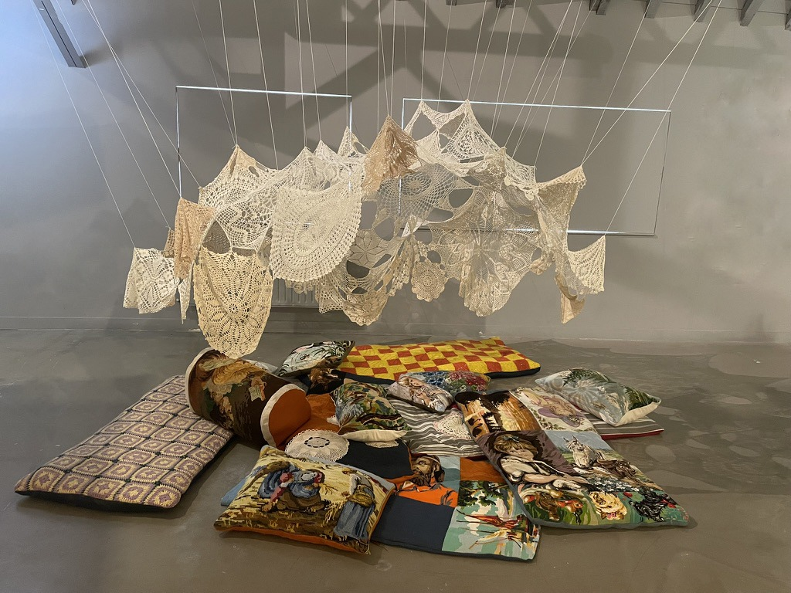
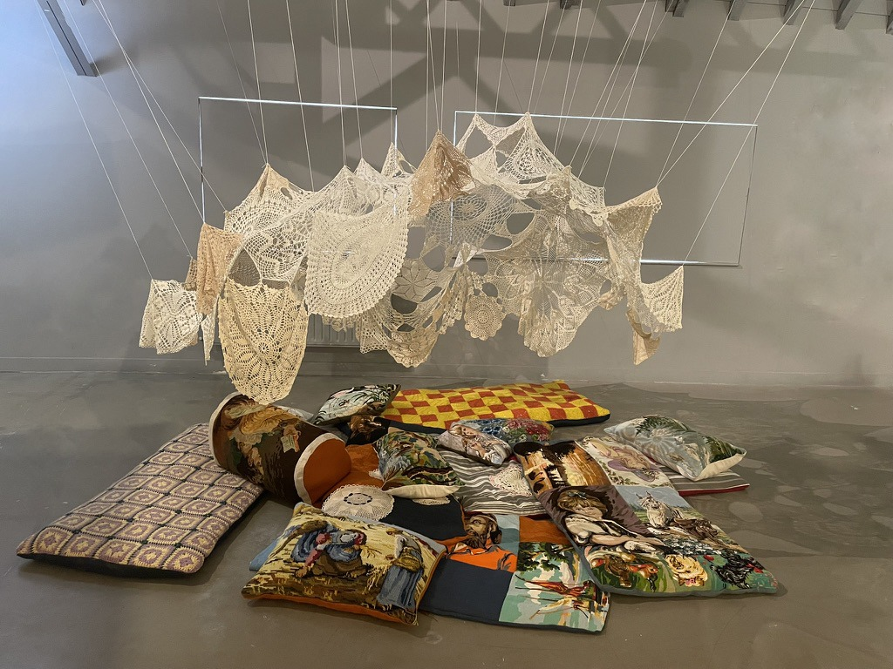

La résidence
Plusieurs semaines de résidence dans l’ancienne imprimerie du magazine Le Petit Echo de la Mode, à Châtelaudren. Un lieu chargé d’histoires, d’injonctions feutrées et de silences têtus. J’ai plongé dans ces pages jaunies où l’on parlait d’amour, de cuisine, de couture… mais aussi, en filigrane, de devoirs conjugaux, de beauté réglementée et de vies de femmes confinées.
À partir de ces fragments, des créations prennent forme dans l’espace du Petit Écho. Je ne veux pas tout dévoiler ici, car ces installations sont à vivre. À travers elles, j’essaie de faire entendre les chuchotements du passé, de les faire vibrer dans le présent. Un travail d’archéologie sensible, entre mémoire collective et émotions intimes.

 

L'installation
Cette installation présente une cinquantaine de robes d'époque disposées comme un régiment militaire, symbolisant la société patriarcale qui contraignait les femmes. L'œuvre fait référence à l'action historique du MLF du 26 août 1970, quand neuf militantes tentèrent de déposer une gerbe à "la femme du Soldat inconnu" à Paris pour honorer les femmes oubliées de l'Histoire.
Chaque robe contient une poche au niveau du cœur avec fermeture éclair qui révèle des "courriers du cœur" - des archives personnelles extraites de magazines féminins du Petit Écho de la Mode. L'artiste utilise la couture, geste domestique traditionnel, pour créer une poésie visuelle qui donne voix aux femmes réduites au silence.

Archéologie sociale
L'installation fonctionne comme une "archéologie sociale" qui exhume la mémoire des femmes ménagères invisibilisées. Elle interroge les inégalités de genre persistantes et les stéréotypes, tout en rendant hommage aux luttes féminines passées. L'objectif est de créer un dialogue sur l'égalité des femmes, en confrontant notre société actuelle aux normes du passé qui continuent d'influencer le présent.
Residency at Le Petit Écho de la Mode – Châtelaudren
Several weeks of residency in the former printing house of Le Petit Écho de la Mode magazine, in Châtelaudren. A place steeped in stories, soft-spoken injunctions, and stubborn silences. I delved into these yellowed pages filled with talk of love, cooking, and sewing... but also, between the lines, of marital duties, regulated beauty, and women's lives confined within carefully drawn roles.
From these fragments, creations are taking shape within the space of Le Petit Écho. Through them, I try to make the whispers of the past heard, to let them resonate in the present. A work of sensitive archaeology, woven between collective memory and intimate emotion.
The installation
This installation features around fifty period dresses arranged like a military regiment, symbolizing the patriarchal society that constrained women... Each dress contains a heart-level pocket with a zipper, revealing “love letters”... The artist uses sewing to create a visual poetry that gives voice to silenced women.
Social Archaeology
The installation functions as a "social archaeology" that exhumed the memory of invisibilized housewives. It questions persistent gender inequalities and stereotypes, while paying tribute to past female struggles. The objective is to create a dialogue on women's equality, by confronting our current society with the norms of the past that continue to influence the present.